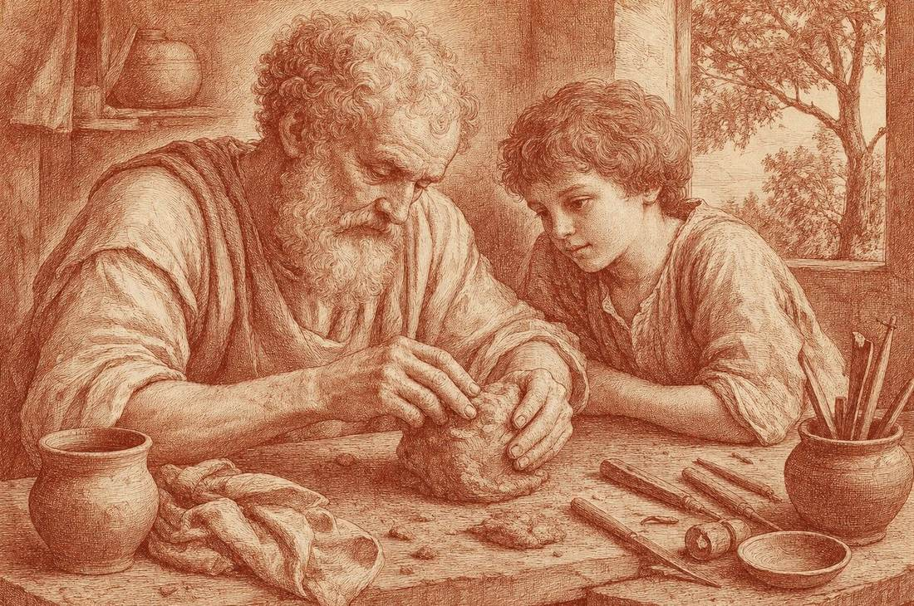

Индивидуальное ведение
Лекционный курс, который я составляю лично под вас: читаем, разбираем прочитанное и переносим знания в жизнь.
- Формат
- лекция онлайн раз в неделю, полтора часа, и живой чат
- Длительность
- 3 месяца, полгода или год
- Стоимость
- от 2 000 $
- Первый шаг
- бесплатный звонок, 20 минут

О ведении
Ведение можно пройти за три месяца, полгода или год. Каждая клетка — одна неделя занятий. Нажмите на знак в центре и на каждый срок.
Открыто 0 из 4
Нажмите на знак «Ведение» или на любой срок, и здесь откроется его текст.
Что такое ведение
Это лекционный курс, который я составляю лично под вас. Мы обязательно читаем и разбираем прочитанное, время на вопросы и ответы не ограничено. Вы получаете практические задания, чтобы знания вошли в вашу реальную жизнь.
Как это проходит. Раз в неделю — лекция онлайн, полтора часа. После неё я присылаю файлы и литературу, а до следующей встречи у вас есть задание. Между занятиями мы на связи в живом чате.
Ритм не жёсткий: кому-то удобнее дважды в неделю по 45 минут, подберём его вместе. Чаще всего занятия проходят онлайн, но если мы в одном месте, можно встречаться вживую, и так даже лучше. Сейчас я на Бали.
3 месяца
2 000 $ или 3 платежа по 700 $
В большинстве случаев за три месяца мы успеваем покрыть минимальную базу. Но не каждую тему можно уложить в такой короткий срок. Этот формат требует высокой мотивации и личной включённости.
Полгода
3 500 $
Удачный срок. Можно затронуть больше тонкостей и разглядеть красоту собственной внутренней эволюции в процессе познания.
Год
6 500 $
Наши штудии плавно входят в вашу жизнь. Вы сосуществуете с изучаемым предметом и изучаете его последовательно и размеренно, на любом уровне глубины.
С чем приходят
Запросы бывают общими, узкими и иными. Вот лишь некоторые из них:
Общие
- история религиозных идей
- авраамические религии и разница между ними
- гностическая и герметическая традиции
- разбор священного писания
- эзотеризм и мистицизм
Узкие
- подготовка к процедуре конверсии
- мистические традиции и ветви учений
- специфическая литература
- йогические и тантрические практики
Иные. Если вашего запроса нет в этих списках, расскажите о нём на бесплатном звонке: списки не исчерпывающие.
Кому подходит
Любому человеку, который:
- искренне заинтересован;
- готов учиться и расти;
- обязуется применять знания во благо.
Бесплатный звонок
Мы познакомимся и поймём, готовы ли работать вместе. Вы расскажете о своём запросе и интересе, а я прикину, как лучше организовать программу.
Записаться на звонокКнопка откроет чат со мной в Telegram.